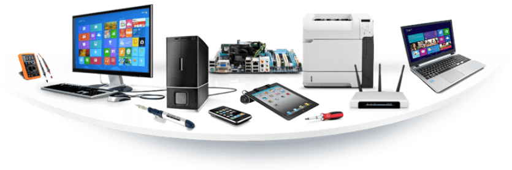

Autoformation
Frédéric est autodidacte dans le développement web. Il est arrivé dans le monde du web en 2019. Il a commencé par faire de l'autoformation sur le site web "OpenClassrooms". Il y a appris les bases de HTML, CSS et JavaScript.
Réalisations
Voulant toujours apprendre davantage, Frédéric s'est inscrit à une section "Incubateur" avec l'AFPA de Lille. Il y apprendra Symfony 6, REACT, Tailwind et quelques petits frameworks tout en créant un site de covoiturage. Cette période durera 3 mois.

Certifications
En mai 2022, il intègre la formation de développeur web et web mobile avec la
Sofip. Il y apprend de manière
plus approfondie les langages tels que HTML, CSS et JavaScript. Durant cette formation, Frédéric a
effectué
une période de stage d'un mois au cours de laquelle il a créé un site web pour l'association
sportive du
club de foot de Lallaing.
En décembre 2022, Frédéric obtient son diplôme de développeur web.
En mai 2023 Frédéric est retenu pour faire un formation concepteur d'application web, plus
communément
appelée
CDA.